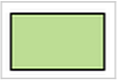
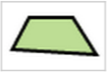
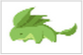

Khan Academy Documentation
可汗學院參考文件
Quick Jump 快速鏈結:
Colors 色彩, Text 文字, Transforms 變形, Environment 程式執行環境, Mouse 滑鼠,
Keyboard 鍵盤, Math 數學, Trig 三角函數, Date/Time 時間／日期,
Debugging 偵錯, JavaScript
Shapes 圖形
|  |
rect(x, y, w, h)
矩形(x, y, 寬度, 高度) |
 |
line(x1, y1, x2, y2)
直線(x1, y1, x2, y2) |
|
bezier(x1, y1, cx1, cy1, cx2, cy2, x2, y2)
貝茲曲線(x1, y1, cx1, cy1, cx2, cy2, x2, y2) |
 |
ellipse(x, y, w, h)
橢圓形(x, y, 寬度, 高度) |
 |
point(x, y)
點(x, y) |
 |
quad(x1, y1, x2, y2, x3, y3, x4, y4)
四邊形(x1, y1, x2, y2, x3, y3, x4, y4) |
 |
triangle(x1, y1, x2, y2, x3, y3)
三角形(x1, y1, x2, y2, x3, y3) |
 |
arc(x, y, w, h, start, stop)
圓弧形(x, y, w, h, 起點, 停止/終點) |
 |
image(image, x, y, width*, height*)
影像(圖片, x, y, 寬度*, 高度*) |
 |
beginShape()/ endShape()/ vertex()
開始繪圖()／結束繪圖() |
|
curveVertex()
曲線節點/頂點() |
 |
bezierVertex()
貝茲曲線節點/頂點() |
See also: 也可以參考
ellipseMode 橢圓形編輯模式,
rectMode 矩形編輯模式,
imageMode 影像編輯模式,
strokeCap 線條端點形式,
bezierPoint 計算貝茲曲線上某一點座標,
bezierTangent 貝茲曲線上某一點的切線,
curve 曲線,
curvePoint 計算曲線上某一點座標,
curveTangent 曲線上某一點的切線,
curveTightness 繪製的曲線質量,
strokeJoin 線條連結處形式,
curveTightness 繪製的曲線質量
Colors 色彩
background(r, g, b)
背景(紅, 綠, 藍)
Set the background color
設定背景顏色 |
stroke(r, g, b)
圖形邊框顏色(紅, 綠, 藍)
Set the outline color for shapes
設定圖形邊框顏色 |
color(r, g, b)
顏色(紅, 綠, 藍)
Store a color in a variable
儲存顏色至變數中 |
fill(r, g, b)
填色(紅, 綠, 藍)
Set the fill color for shapes
設定圖形填色 |
strokeWeight(thickness)
線條粗細/厚度(粗細)
Change the thickness of lines and outlines
改變線條及邊框粗細 |
blendColor(c1, c2, MODE)
混合兩色/混色(顏色1, 眼色2, 模式)
Blend two colors together
混合兩色 |
noFill()
關閉圖形填色()
Turn off fill for shapes
關閉圖形填色 |
noStroke()
關閉圖形邊框()
Turn off outlines for shapes
關閉圖形邊框 |
lerpColor(c1, c2, amount)
尋找介於兩色間的顏色/中間色(顏色1, 眼色2, 數量)
Find color between 2 colors
尋找介於兩色間的顏色 |
See also 也可以參考:
colorMode 色彩模式,
red 色彩的紅色值,
green 色彩的綠色值,
blue 藍色值,
alpha 色彩的透明度,
hue 色相值,
saturation 飽和度,
brightness 亮度值
Text 文字
See also 也可以參考:
textWidth 字串寬度,
textAscent 文字頂點到基線的距離,
textDescent 文字頂點到基線的距離,
textLeading 文字的行間距,
textAlign 文字的對齊方式
See also:
pushMatrix/popMatrix 保存現在的座標系統／恢復之前的座標系統,
resetMatrix 重設為單元矩陣,
printMatrix 輸出現在的矩陣
Environment 程式執行環境
See also 也可以參考:
Program.assertEqual 兩輸入參數是否相等,
Program.restart 程式重新啟動,
frameCount 程式開始執行後總畫面數,
loop 重複繪圖 /
noLoop 停止重複繪圖
Mouse 滑鼠
Keyboard 鍵盤
Math 數學
random(low, high)
隨機(低, 高)
Generate a random number
產生隨機值 |
abs(num)
絕對(數)
Take the absolute value of a number
取絕對值 |
round(num)
四捨五入(數)
Return the nearest whole number
四捨五入至整數 |
dist(x1, y1, x2, y2)
距離(x1, y1, x2, y2)
Calculates the distance between two points
計算兩點間距離 |
log(num)
取對數(數)
Take the logarith of a number
取對數 |
ceil(num)
無條件進位(數)
Return the nearest whole number of greater/equal value
無條件進位至整數 |
constrain(value, min, max)
侷限/約束(值, 極小值, 極大值)
Constrain value between min and max
將值侷限於最小值及最大值間 |
pow(num, exponent)
乘方/指數(數, 幂次方)
Raise a number to an exponent
數的幂次方 |
floor(num)
無條件捨去至整數(數)
Return nearest whole number of lesser/equal value
無條件捨去至整數 |
min(num1, num2)
較小者/最小值(數1, 數2)
Return the minimum of two valuies
傳回兩數中的較小者 |
sq(num)
平方(數)
Square a number
數的平方 |
PVector(x, y)
二維向量(x, y)
An object that describes a 2-dimensional vector
描述二維向量的物件 |
max(num1, num2)
較大者/最大值(數1, 數2)
Return the maximum of two valuies
傳回兩數中的較大者 |
sqrt(num)
平方根/開根號(數)
Take the square root of a number
數的平方根 |
|
See also 也可以參考:
mag 向量大小,
exp 歐拉數,
map 映射,
norm 範數,
lerp 兩數間的特定增量,
noise 柏林雜訊,
noiseDetail 柏林雜訊密度與均勻度,
Random.nextGaussian 斯常態分布的隨機亂數
Trigonometry 三角函數
See also 也可以參考:
acos 反餘弦值,
asin 反正弦值,
atan 反正切值,
atan2 兩個參數的反正切值,
radians 極座標,
degrees 角座標,
angleMode 角度模式
Date & Time 日期 & 時間
Debugging 偵錯
JavaScript
Our documentation does not cover the many ways to use JavaScript. Learn more at:
我們的文檔不包含許多使用Javascript的方式。更多資訊請參考：
This reference is based on 此參考文件是根據 ProcessingJS reference and is licensed under the 撰寫並獲得 CC BY-NC-SA 2.0 license 授權使用。
All code is owned by its respective author and made available under an 所有程式歸其作者所有並透過 MIT license 授權條款MIT 所提供. For more information please see the 更多資訊請參閱 Terms of Service 服務條款.
Return to KhanZH Home Page 回到可汗學院中文首頁